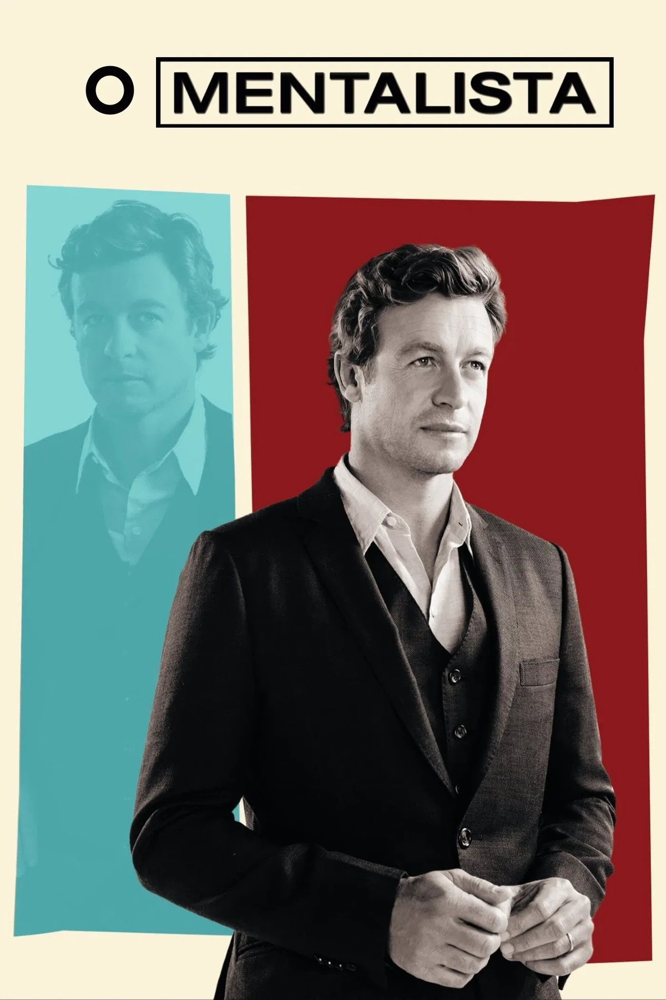

Publicado na Netflix.
The Mentalist

O Mentalista é uma série dramática policial de investigação transmitida entre 2008 e 2015, somando 7 temporadas e 151 episódios.
Sinopse Principal
A trama acompanha Patrick Jane, um homem com habilidades extraordinárias de observação, dedução e leitura comportamental. No passado, Jane usava esses talentos fingindo ser um vidente médium em programas de televisão. Sua vida muda drasticamente quando ele insulta publicamente um serial killer conhecido como Red John. Em vingança, o criminoso assassina brutalmente a esposa e a filha de Jane, deixando na parede a sua marca registrada: um rosto sorridente desenhado com o sangue das vítimas.Consumido pela culpa e pelo desejo de vingança, Jane abandona a carreira de falso vidente e passa a atuar como consultor independente do CBI, ajudando a equipe liderada pela agente Teresa Lisbon a resolver homicídios complexos, enquanto busca incansavelmente por Red John.
O estudante aprende enquanto resolve problemas de maneira interativa.
Conteúdo Netflix.